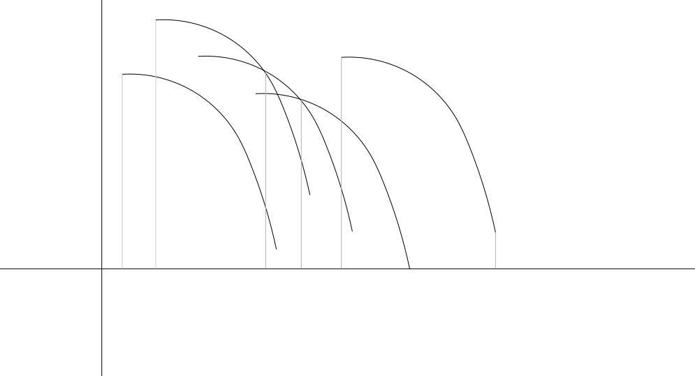

In this problem, we are given a circle, a collection of points around the perimeter of the circle, and the attachment values for each of those points (Li). We want the top K pairs of points that maximizes the Euclidean distance between the points plus their attachment values. For Test Set 1, we know that the point values are picked randomly. We will need to use this property somehow. We also know that K=1, so we are looking for the top pair of points.
Imagine considering the points around the circle in the clockwise order. Let us say that we are at a point p. Also, without loss of generality, let us only consider points that are at most 180 degrees clockwise from p. That is, we only consider half of the circle starting at p. If we find the maximum pairing (maximum distance plus attachment values) for every possible p, the maximum over all of those pairs will be the answer. This is because considering each point, (and points that are up to 180 degrees clockwise from it) will consider every possible pair of points at least once.
So, we are considering all points p in the clockwise order around the circle and trying to find the maximum pairing for each of these. If we consider the possible other points we could pair with p in the counterclockwise order starting from the location 180 degrees clockwise of p (the "other side" of the circle from p), then we can observe some useful properties. Once we have considered some pairing point x, then some further counterclockwise point y will be closer to p. Thus, for y to be the maximum pairing, its attachment value must be greater than x's attachment value. So, we only need to consider points that increase in their attachment values.
We know that the attachment values are randomly selected. In a sequence of N integers randomly selected from a uniform range, we expect the running maximum to change only log N times. To see why, observe that first element has a 1/1 chance of being the new maximum, the second element has a 1/2 chance, the third element has a 1/3 chance, and so on. This is the harmonic series. The sum of its first N terms is bounded by O(log N). Thus, we expect to see only O(log N) changes of maximum. This means the explained solution has an expected time complexity of O(N log N), which should be fast enough to pass. The worst case among all possible inputs takes O(N2) time. However, as we showed, this is extremely unlikely with random attachment values.
Now, when we are considering a point x, we need an efficient way to find the first point in the counterclockwise order from x whose attachment value is greater than x. This is actually equivalent to a known problem: the next greater element problem. The twist is that our values are on a circle, so we have wraparound. One way to deal with this is to make an array of attachment values, append it to itself, and then apply a fast algorithm for the next greater element problem to the resulting array.
There are other approaches that also take O(N2) time in the worst case, because they might compare a high percentage of all pairs, but use other clever speedups like jumping to the next greater value, to have a high chance to cut the number of comparisons way down.
The attachment values of points are not randomly generated in this test set, so we will need to find a different approach. Also, K=10, so we also need to find more than one pair of points. Instead of trying to find the top K pairs directly, we can find the best pairing for each point, and extend this solution to find the top K pairs overall. Let's first figure out how to find the best pairing for each point, then explain how to extend it to find the top K pairs.
We start by finding, for each input point P, which other input point Q is its best pairing. That is, we find for which other input point Q the function LP + LQ + distance(P, Q) is maximized.
Now consider points P not necessarily in the input. We define a value function VP(Q) = distance(P, Q) + LQ. Notice that if P is a point in the input, VP(Q) + LP is the amount of cord required to connect P and Q.
Let us approach the problem visually. Imagine moving P around the circle in the clockwise order and computing the value function VP(Q) for all the input points Q that are up to 180 degrees clockwise of P. As we move P, how does the distance function to some other point change?
The Euclidean distance part of the distance function is equivalent to computing the length of a circular chord. That is, VP(Q)=2×R×sin(angle(P, Q)/2)+LQ. Notice here than the angle function is in the clockwise direction, and it's always less than or equal to 180 degrees. Consider how this function changes when P changes. That is, consider the function WQ(P)=VP(Q). As the domain for VP is the Qs that are up to 180 degrees in the clockwise direction, the domain for WQ is the Ps that are up to 180 degrees in the counterclockwise direction.
For each Q, WQ has a constant term LQ, and then a term that looks like half a sine wave. Notice that the graph of the function is the same for any Q, but translated: the change in angle(P, Q) translates it horizontally, and the change in LQ translates it vertically. An example of how these graphs might look follows. Each black curve corresponds to WQ for a different point Q.

Because all of the distance functions have the same shape, we can see that WQ has maximum values compared to all other W functions for a continuous range of points P. So, can we efficiently compute these ranges for each point? If so, we can use these ranges to find the maximum for each possible point by finding which maximum's range it falls into.
We can analyze this graph by sweeping across it from left to right—that is, increasingly along the x-axis. Since the x-axis represents points on a circle, it may be easier to visualize if we instead represent each point by its angle with respect to the positive half of the x-axis, as usual. For a fixed angle A, let us consider only the curves whose domain includes at least one point in the range [0, A] and call that set CA. As we consider increasing values for A, at some point we consider a curve for the first time, with domain [A, B]. The curve is definitely maximum among all curves in CA at B, because it is the only curve at that point. So, the range for which it is the maximum must end there. Since we know there is only one such range, we can binary search to find the beginning of the range.
We keep a sorted list of non-overlapping ranges as we go, and add new ranges to the end. Note that we may need to pop off some ranges from the end of the list if we find a new range that covers them completely, or shorten them if the new range covers them only partially. There can be zero or more left-most ranges where the new curve is fully under the maximum curve in that range, zero or more right-most ranges where the new curve is fully over the maximum curve in that range, and zero or exactly one range where the new curve and the curve from the range cross. We binary search within the range for the exact crossing point.
One issue we still need to deal with is that the graph is actually cyclic. It represents the distance function to points as we go around a circle. So, the distance functions we plot can "wrap around". We can deal with this via a method similar to what we used in Test Set 1: append a copy of the input to itself, and go around the input twice.
The final list of ranges can be used to get the maximum pairing for each point on the circle. For each input point P, we find the Q for which WQ is the maximum at P. Since we only need to check input points P, we can restrict the domains of all functions and intervals discussed so far to input points without affecting the correctness. This allows us to binary search over an array of O(N) values as opposed to over a range of real numbers.
The time complexity of constructing the list of ranges is therefore O(N log N). Then, we go through the list iterating over the list of possible Ps for each Q. While a particular Q can have a long range, overall, we iterate over each input P at most once (or twice for the duplicated input). This makes the final step take linear time.
An O(N) algorithm for the above problem does exist. This is left as an exercise for the reader.
We have a way to find the best pairing for each point. How do we extend this solution to find the top K unordered pairings? It is possible that a pair in the top K is not in our list of best pairings for each point. However, we can still use our list. Consider sorting the list by the Euclidean distance plus attachment values of the pair in descending order. The first entry in the list will definitely be the top pair overall. The second top pair will either be the next entry in our list, or it will be paired with one of the points in our top pair. We can look at all pairings involving the points in our top pair, and now we know the second best pair. We can repeat this process to find the top K. In each step, the pair we choose is either the next best pair in our list that we haven't seen, or it is a pairing with a point in the previous pairs in our list. In each of these K steps, we take O(N) time. Sorting our list initially takes O(N log N) time, so our algorithm requires O(N log N + N × K) time overall, which is fast enough to pass.